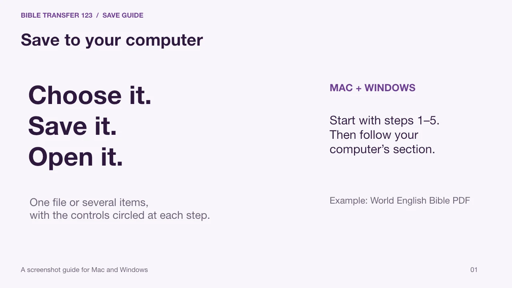

← Back to the library
SCREENSHOT GUIDE · ENGLISH
Save to your computer
Follow the website steps, then choose Mac or Windows. The gold circles show where to click.

Screenshot guide for Mac and Windows
MAC + WINDOWS
Save to your computer
Choose it. Save it. Open it.
Start with the website steps, then follow your computer’s section.
Open full-size slide (new tab)
The screenshot could not load. You can still follow the instructions here.
Use ← and → on your keyboard. Slides stay put until you choose the next one.